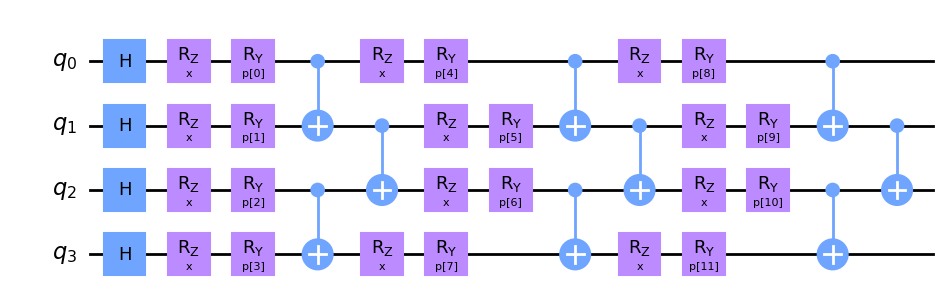

squlearn.encoding_circuit.LayeredEncodingCircuit
- class squlearn.encoding_circuit.LayeredEncodingCircuit(num_qubits: int, num_features: int, feature_str: str = 'x', parameter_str: str = 'p', **kwargs)
A class for a simple creation of layered encoding circuits.
Gates are added to all qubits by calling the associated function similar to Qiskit’s circuits. Single qubit gates are added to all qubits, while two qubits gates can be added with different entanglement patterns. The implemented one and two qubit gates are listed below.
Some gates have a input variable, as for example rotation gates, that can be set by supplying the string
"x"for feature or"p"for parameter. Non-linear mapping can be added by setting the map variablemap=. Two qubit gates can be placed either in a nearest-neighborNNor a all to all entangling patternAA.Simple Layered Encoding Circuit
from squlearn.encoding_circuit import LayeredEncodingCircuit encoding_circuit = LayeredEncodingCircuit(num_qubits=4,num_features=2) encoding_circuit.H() encoding_circuit.Rz("x") encoding_circuit.Ry("p") encoding_circuit.cx_entangling("NN") encoding_circuit.draw("mpl")
Create a layered encoding circuit with non-linear input encoding
It is also possible to define a non-linear function for encoding variables in gates by supplying a function for the encoding as the second argument
import numpy as np from squlearn.encoding_circuit import LayeredEncodingCircuit def func(a,b): return a*np.arccos(b) encoding_circuit = LayeredEncodingCircuit(num_qubits=4,num_features=2) encoding_circuit.H() encoding_circuit.Rz("p","x",encoding=func) encoding_circuit.cx_entangling("NN") encoding_circuit.draw("mpl")
Create a layered encoding circuit with layers
Furthermore, it is possible to define layers and repeat them.
from squlearn.encoding_circuit import LayeredEncodingCircuit from squlearn.encoding_circuit.layered_encoding_circuit import Layer encoding_circuit = LayeredEncodingCircuit(num_qubits=4,num_features=2) encoding_circuit.H() layer = Layer(encoding_circuit) layer.Rz("x") layer.Ry("p") layer.cx_entangling("NN") encoding_circuit.add_layer(layer,num_layers=3) encoding_circuit.draw("mpl")
Create a layered encoding circuit from string
Another very useful feature is the creation from encoding circuits from strings. This can be achieved by the function
LayeredEncodingCircuit.from_string().Gates are separated by
-, layers can be specified byN[...]whereNis the number of repetitions. The entangling strategy can be set by addingNNorAA. Adding a encoding function is possible by adding a=and the function definition as a string. The variables used in the function are given within curly brackets, e.g.crz(p;=a*np.arccos(b),{y,x};NN).The following strings are used for the gates:
Single qubit gates and their string representation String
Function
String
Function
String
Function
"H""I""P""Rx""Ry""Rz""S""Sc""T""Tc""U""X""Y""Z"Two qubit gates and their string representation String
Function
String
Function
String
Function
"ch""cx""cy""cz""s""cp""crx""cry""crz""rxx""ryy""rzz""rzx""cu"from squlearn.encoding_circuit import LayeredEncodingCircuit encoding_circuit = LayeredEncodingCircuit.from_string( "Ry(p)-3[Rx(p,x;=y*np.arccos(x),{y,x})-crz(p)]-Ry(p)", num_qubits=4, num_features=1 ) encoding_circuit.draw("mpl")
** Hyperparameter optimization **
If layers are introduced in the construction of the LayeredEncodingCircuit, the number of layers can be adjusted afterwards by the
set_params()method. This is also possible for multiple layers, for which the parameters are additionally number, e.g.num_layer_1. The number of layers as well as the number of qubits and the construction string are available as hyper-parameters that can be optimized in a hyper-parameter search.from sklearn.datasets import make_regression from sklearn.model_selection import GridSearchCV from squlearn.encoding_circuit import LayeredEncodingCircuit from squlearn.kernel import ProjectedQuantumKernel, QKRR from squlearn.util import Executor X, y = make_regression(n_samples=40, n_features=1, noise=0.1, random_state=42) lec = LayeredEncodingCircuit.from_string("Ry(x)-Rz(x)-cx",1,1) pqk = ProjectedQuantumKernel(lec,Executor()) qkrr = QKRR(quantum_kernel=pqk) param_grid ={ "encoding_circuit_str": ["Ry(x)-Rz(x)-cx", "Ry(x)-cx-Rx(x)"], "num_qubits" : [1,2], "num_layers" : [1,2] } grid_search = GridSearchCV(qkrr, param_grid, cv=2) grid_search.fit(X, y) print("\nBest solution: ", grid_search.best_params_)
Best solution: {'encoding_circuit_str': 'Ry(x)-cx-Rx(x)', 'num_layers': 1, 'num_qubits': 1}- Parameters:
num_qubits (int) – Number of qubits of the encoding circuit
num_features (int) – Dimension of the feature vector
feature_str (str) – Label for identifying the feature variable group (default:
"x").parameter_str (str) – Label for identifying the parameter variable group (default:
"p").
- H()
Adds a layer of H gates to the Layered Encoding Circuit
- I()
Adds a layer of I gates to the Layered Encoding Circuit
- P(*variable_str, encoding: Callable | None = None)
Adds a layer of P gates to the Layered Encoding Circuit
- Parameters:
variable_str (str) – Labels of variables that are used in the gate
encoding (Callable) – Encoding function that is applied to the variables, input in the same order as the given labels in variable_str
- Rx(*variable_str: str, encoding: Callable | None = None)
Adds a layer of Rx gates to the Layered Encoding Circuit
- Parameters:
variable_str (str) – Labels of variables that are used in the gate
encoding (Callable) – Encoding function that is applied to the variables, input in the same order as the given labels in variable_str
- Ry(*variable_str, encoding: Callable | None = None)
Adds a layer of Ry gates to the Layered Encoding Circuit
- Parameters:
variable_str (str) – Labels of variables that are used in the gate
encoding (Callable) – Encoding function that is applied to the variables, input in the same order as the given labels in variable_str
- Rz(*variable_str, encoding: Callable | None = None)
Adds a layer of Rz gates to the Layered Encoding Circuit
- Parameters:
variable_str (str) – Labels of variables that are used in the gate
encoding (Callable) – Encoding function that is applied to the variables, input in the same order as the given labels in variable_str
- S()
Adds a layer of S gates to the Layered Encoding Circuit
- S_conjugate()
Adds a layer of conjugated S gates to the Layered Encoding Circuit
- T()
Adds a layer of T gates to the Layered Encoding Circuit
- T_conjugate()
Adds a layer of conjugated T gates to the Layered Encoding Circuit
- U(*variable_str)
Adds a layer of U gates to the Layered Encoding Circuit
- Parameters:
variable_str (str) – Labels of variables that are used in the gate
encoding (Callable) – Encoding function that is applied to the variables, input in the same order as the given labels in variable_str
- X()
Adds a layer of X gates to the Layered Encoding Circuit
- Y()
Adds a layer of Y gates to the Layered Encoding Circuit
- Z()
Adds a layer of Z gates to the Layered Encoding Circuit
- add_layer(layer, num_layers=1) None
Add a layer num_layers times.
- Parameters:
layer – Layer structure
num_layers (int) – Number of times that the layer is repeated
- ch_entangling(ent_strategy='NN')
Adds a layer of controlled H gates to the Layered Encoding Circuit
- Parameters:
ent_strategy (str) – Entanglement strategy that is used to determine the entanglement, either
"NN"or"AA".
- cp_entangling(*variable_str, ent_strategy='NN', encoding: Callable | None = None)
Adds a layer of controlled P gates to the Layered Encoding Circuit
- Parameters:
variable_str (str) – Labels of variables that are used in the gate
ent_strategy (str) – Entanglement strategy that is used to determine the entanglement, either
"NN"or"AA".encoding (Callable) – Encoding function that is applied to the variables, input in the same order as the given labels in variable_str
- crx_entangling(*variable_str, ent_strategy='NN', encoding: Callable | None = None)
Adds a layer of controlled Rx gates to the Layered Encoding Circuit
- Parameters:
variable_str (str) – Labels of variables that are used in the gate
ent_strategy (str) – Entanglement strategy that is used to determine the entanglement, either
"NN"or"AA".encoding (Callable) – Encoding function that is applied to the variables, input in the same order as the given labels in variable_str
- cry_entangling(*variable_str, ent_strategy='NN', encoding: Callable | None = None)
Adds a layer of controlled Ry gates to the Layered Encoding Circuit
- Parameters:
variable_str (str) – Labels of variables that are used in the gate
ent_strategy (str) – Entanglement strategy that is used to determine the entanglement, either
"NN"or"AA".encoding (Callable) – Encoding function that is applied to the variables, input in the same order as the given labels in variable_str
- crz_entangling(*variable_str, ent_strategy='NN', encoding: Callable | None = None)
Adds a layer of controlled Rz gates to the Layered Encoding Circuit
- Parameters:
variable_str (str) – Labels of variables that are used in the gate
ent_strategy (str) – Entanglement strategy that is used to determine the entanglement, either
"NN"or"AA".encoding (Callable) – Encoding function that is applied to the variables, input in the same order as the given labels in variable_str
- cu_entangling(*variable_str, ent_strategy='NN', encoding: Callable | None = None)
Adds a layer of controlled U gates to the Layered Encoding Circuit
- Parameters:
variable_str (str) – Labels of variables that are used in the gate
ent_strategy (str) – Entanglement strategy that is used to determine the entanglement, either
"NN"or"AA".encoding (Callable) – Encoding function that is applied to the variables, input in the same order as the given labels in variable_str
- cx_entangling(ent_strategy='NN')
Adds a layer of controlled X gates to the Layered Encoding Circuit
- Parameters:
ent_strategy (str) – Entanglement strategy that is used to determine the entanglement, either
"NN"or"AA".
- cy_entangling(ent_strategy='NN')
Adds a layer of controlled Y gates to the Layered Encoding Circuit
- Parameters:
ent_strategy (str) – Entanglement strategy that is used to determine the entanglement, either
"NN"or"AA".
- cz_entangling(ent_strategy='NN')
Adds a layer of controlled Z gates to the Layered Encoding Circuit
- Parameters:
ent_strategy (str) – Entanglement strategy that is used to determine the entanglement, either
"NN"or"AA".
- draw(output: str = None, feature_label: str = 'x', parameter_label: str = 'p', decompose: bool = False, **kwargs) None
Draws the encoding circuit circuit using the QuantumCircuit.draw() function.
- Parameters:
feature_label (str) – Label for the feature vector (default:”x”).
parameter_label (str) – Label for the parameter vector (default:”p”).
decompose (bool) – If True, the circuit is decomposed before printing (default: False).
kwargs – Additional arguments from Qiskit’s QuantumCircuit.draw() function.
- Returns:
Returns the circuit in qiskit QuantumCircuit.draw() format
- classmethod from_string(encoding_circuit_str: str, num_qubits: int, num_features: int, feature_str: str = 'x', parameter_str: str = 'p', num_layers: int = 1)
Constructs a Layered Encoding Circuit through a given string of gates.
- Parameters:
encoding_circuit_str (str) – String that specifies the encoding circuit
num_qubits (int) – Number of qubits in the encoding circuit
num_features (int) – Dimension of the feature vector.
feature_str (str) – String that is used in encoding_circuit_str to label features (default: ‘x’)
parameter_str (str) – String that is used in encoding_circuit_str to label parameters (default: ‘p’)
num_laters (int) – Number of layers, i.e., the number of repetitions of the encoding circuit (default: 1)
- Returns:
Returns a LayeredEncodingCircuit object that contains the specified encoding circuit.
- generate_initial_parameters(seed: int | None = None) ndarray
Generates random parameters for the encoding circuit
- Parameters:
seed (Union[int,None]) – Seed for the random number generator (default: None)
- Returns:
The randomly generated parameters
- get_circuit(features: ParameterVector | ndarray, parameters: ParameterVector | ndarray) QuantumCircuit
Returns the circuit of the Layered Encoding Circuit
- Parameters:
Union[ParameterVector (param_vec) – Input vector of the features from which the gate inputs are obtained
np.ndarray] – Input vector of the features from which the gate inputs are obtained
Union[ParameterVector – Input vector of the parameters from which the gate inputs are obtained
np.ndarray] – Input vector of the parameters from which the gate inputs are obtained
- Returns:
Returns the circuit in qiskit QuantumCircuit format
- get_params(deep: bool = True) dict
Returns hyper-parameters and their values of the encoding circuit.
- Parameters:
deep (bool) – If True, also the parameters for contained objects are returned (default=True).
- Returns:
Dictionary with hyper-parameters and values.
- rxx_entangling(*variable_str, ent_strategy='NN', encoding: Callable | None = None)
Adds a layer of Rxx gates to the Layered Encoding Circuit
- Parameters:
variable_str (str) – Labels of variables that are used in the gate
ent_strategy (str) – Entanglement strategy that is used to determine the entanglement, either
"NN"or"AA".encoding (Callable) – Encoding function that is applied to the variables, input in the same order as the given labels in variable_str
- ryy_entangling(*variable_str, ent_strategy='NN', encoding: Callable | None = None)
Adds a layer of Ryy gates to the Layered Encoding Circuit
- Parameters:
variable_str (str) – Labels of variables that are used in the gate
ent_strategy (str) – Entanglement strategy that is used to determine the entanglement, either
"NN"or"AA".encoding (Callable) – Encoding function that is applied to the variables, input in the same order as the given labels in variable_str
- rzx_entangling(*variable_str, ent_strategy='NN', encoding: Callable | None = None)
Adds a layer of Rzx gates to the Layered Encoding Circuit
- Parameters:
variable_str (str) – Labels of variables that are used in the gate
ent_strategy (str) – Entanglement strategy that is used to determine the entanglement, either
"NN"or"AA".encoding (Callable) – Encoding function that is applied to the variables, input in the same order as the given labels in variable_str
- rzz_entangling(*variable_str, ent_strategy='NN', encoding: Callable | None = None)
Adds a layer of Rzz gates to the Layered Encoding Circuit
- Parameters:
variable_str (str) – Labels of variables that are used in the gate
ent_strategy (str) – Entanglement strategy that is used to determine the entanglement, either
"NN"or"AA".encoding (Callable) – Encoding function that is applied to the variables, input in the same order as the given labels in variable_str
- set_params(**params) None
Sets value of the encoding circuit hyper-parameters.
- Parameters:
params – Hyper-parameters and their values, e.g.
num_qubits=2.
- swap(ent_strategy='NN')
Adds a layer of swap gates to the Layered Encoding Circuit
- Parameters:
ent_strategy (str) – Entanglement strategy that is used to determine the entanglement, either
"NN"or"AA".